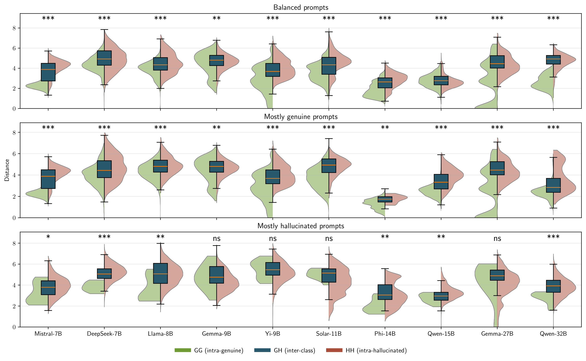
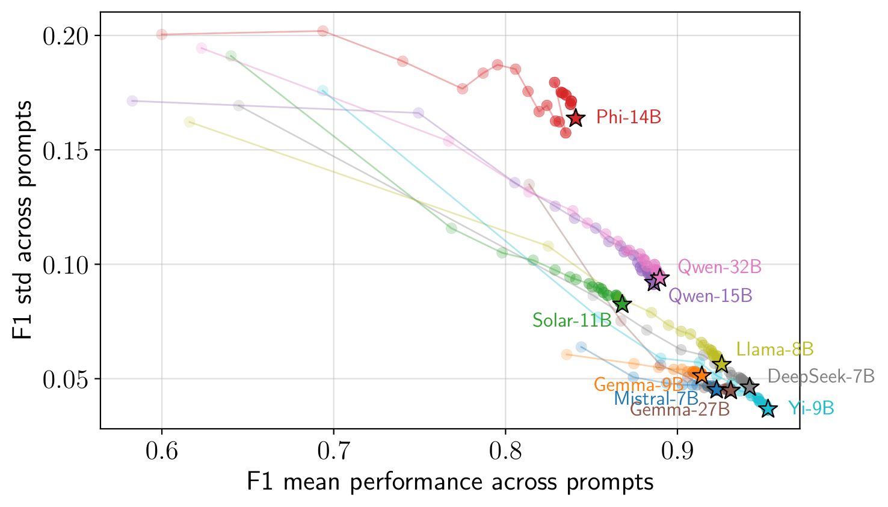

Hallucinations — fluent but factually incorrect responses — pose a major challenge to the reliability of Large Language Models (LLMs), especially in multi-step or agentic settings.
Existing work largely frames hallucinations as a consequence of missing knowledge; we show instead that, even when the relevant factual knowledge is present, models still produce hallucinated answers, pointing to retrieval instability rather than knowledge gaps.
Building on this observation, we introduce APORIA (Aggregate Prompt-wise Observation Retrieving Instability via Asymmetry — the state of puzzlement-in-contradiction that hallucinations embody), a geometric framework that studies repeated responses to the same prompt in sentence-embedding space. Our central hypothesis is that genuine responses cluster more tightly than hallucinated ones; we empirically validate this and show that, after Fisher projection, the two response classes become consistently separable.
We exploit this geometry in APORIA-LP, an efficient label-propagation method that classifies large collections of responses from as few as 30–50 annotations, achieving F1 scores above 90% across ten small-sized LLMs.
To support further research, we release SOCRATES-300K, a fully labelled dataset of 300,000 responses, together with the code for both dataset generation and result reproduction.
Our key finding — framing hallucinations from a geometric perspective in the embedding space — complements traditional knowledge-centric and single-response evaluation paradigms, paving the way for further research.
Under APORIA we test a simple hypothesis: for a given prompt, genuine responses concentrate around a stable semantic core, while hallucinated ones scatter into distinct fabricated explanations.
Building on this geometric structure, APORIA-LP is a supervised procedure that propagates labels from a small annotated subset to the remaining responses.


Per-model accuracy and F1 score (mean across prompts, std in parentheses):
| Model | Accuracy | F1 |
|---|---|---|
| Mistral-7B | 86.8 (6.6) | 92.1 (4.4) |
| DeepSeek-7B | 90.9 (6.2) | 94.1 (4.8) |
| Llama-3-8B | 89.1 (6.3) | 92.5 (5.7) |
| Gemma-2-9B | 86.1 (7.1) | 91.5 (5.0) |
| Yi-1.5-9B | 92.5 (4.8) | 95.3 (3.7) |
| SOLAR-10.7B | 82.7 (9.1) | 86.9 (8.2) |
| Phi-4 | 85.2 (9.6) | 84.0 (16.8) |
| Qwen2.5-14B | 85.0 (8.8) | 88.7 (9.1) |
| Gemma-2-27B | 88.3 (6.9) | 93.0 (4.5) |
| Qwen2.5-32B | 85.5 (8.7) | 89.1 (9.0) |
| Average | 87.2 (7.4) | 90.7 (7.1) |
Hallucinations are retrieval failures, not knowledge gaps.
Hallucinated responses show reduced semantic cohesion.
Hallucination variance concentrates along one direction.
Structure enables label-efficient classification.
One regularisation scale fits all models.
We release a fully labeled dataset of repeated LLM generations designed for structural analyses of hallucinations:
@inproceedings{ricco2026geometric,
title = {A Geometric Analysis of Small-sized Language Model Hallucinations},
author = {Ricco, Emanuele and Onofri, Elia and Cima, Lorenzo and
Cresci, Stefano and Di Pietro, Roberto},
booktitle = {Proceedings of the 43rd International Conference on
Machine Learning (ICML)},
year = {2026}
}